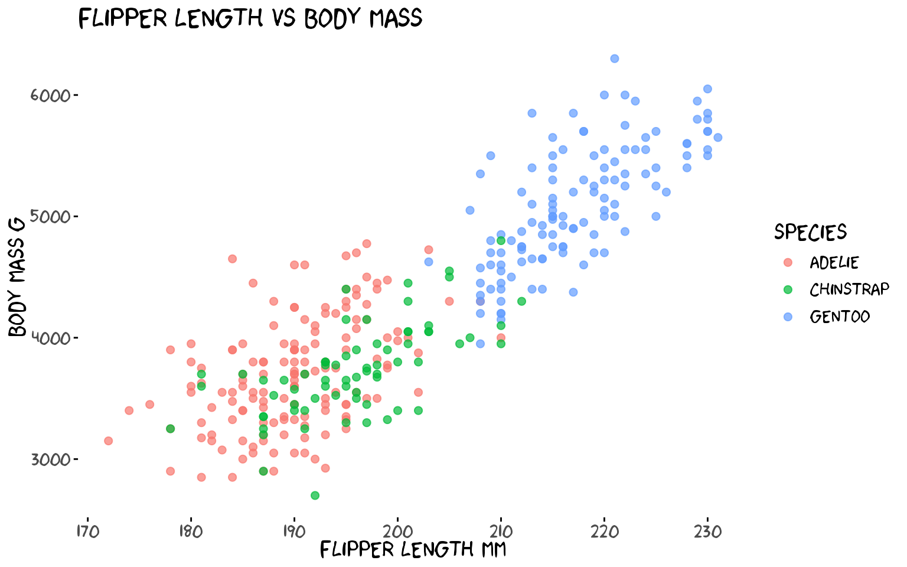
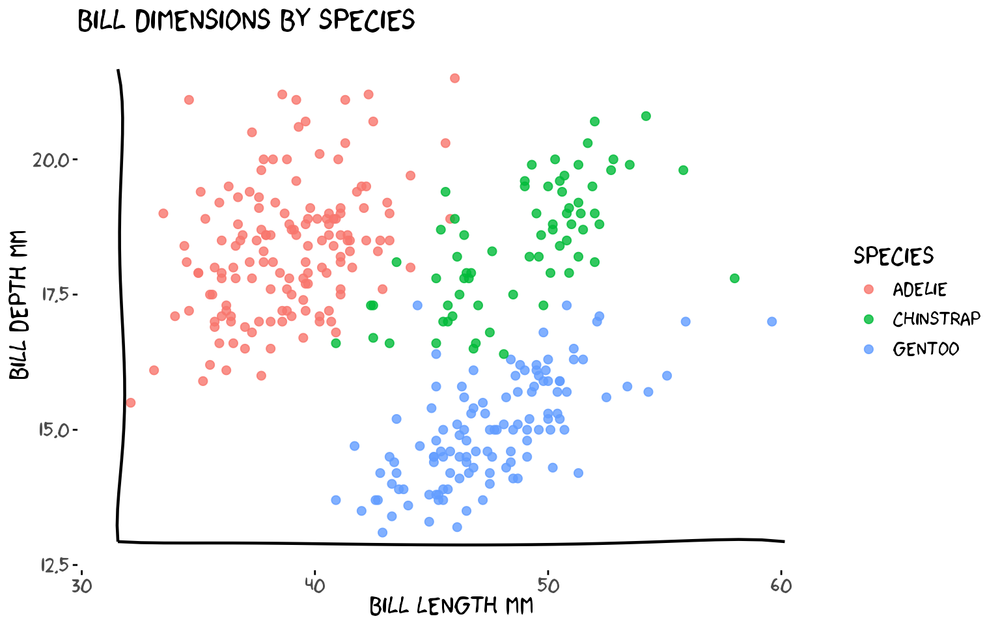
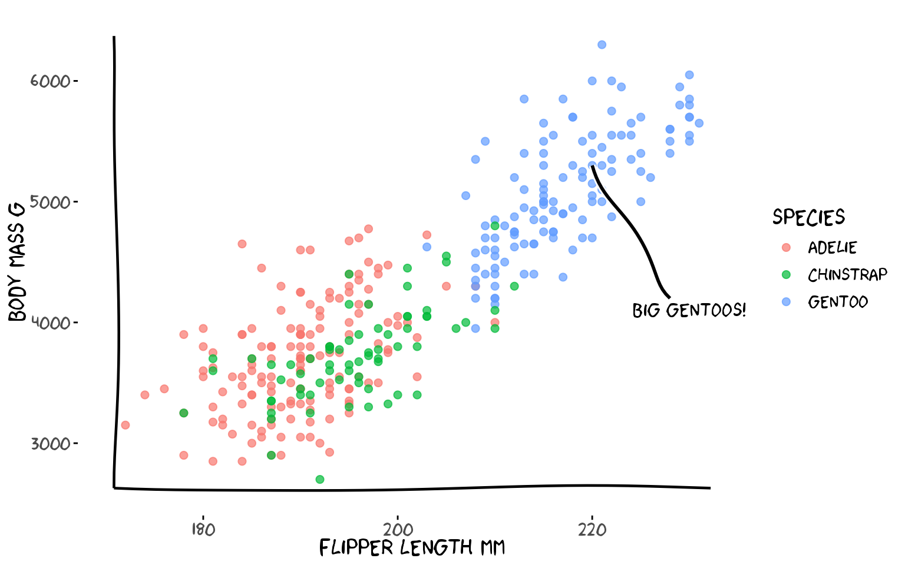
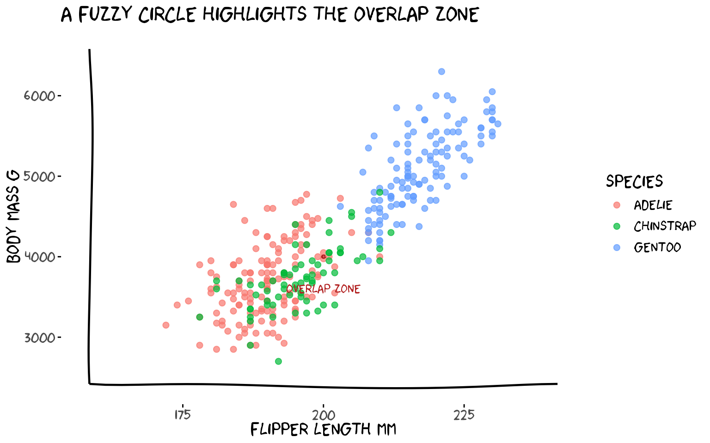
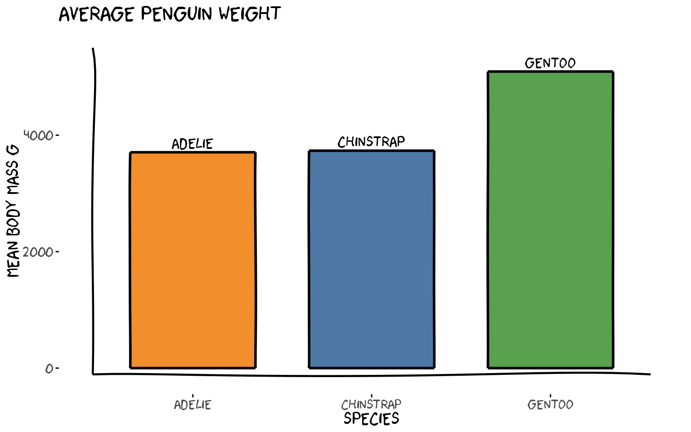
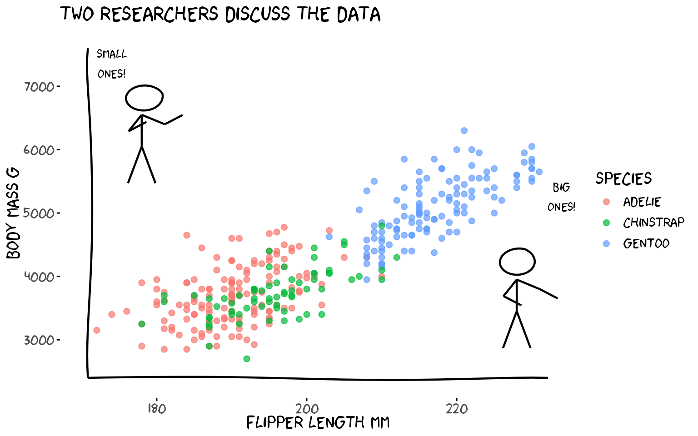
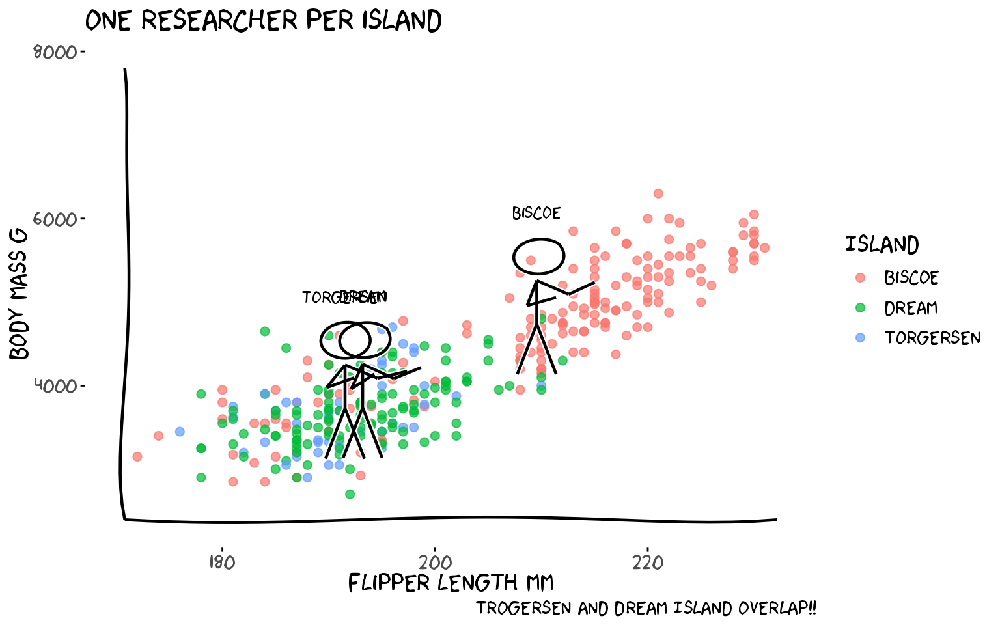
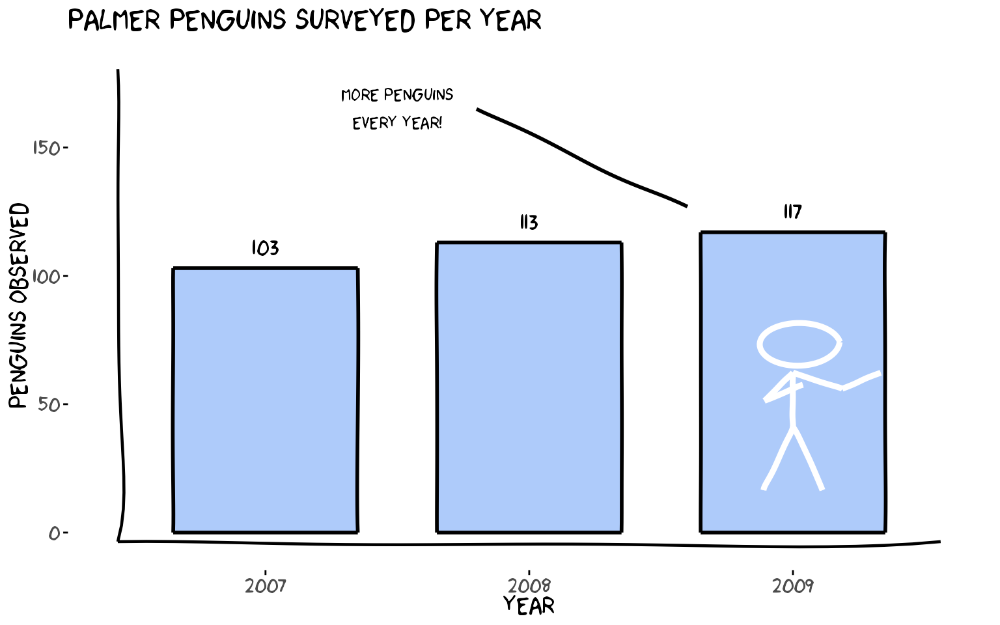

Overview
This vignette demonstrates every function in the
xkcd package using the Palmer
Penguins dataset — a fun alternative to mtcars
featuring size measurements of three penguin species observed on islands
near Palmer Station, Antarctica.
library(xkcd)
library(dplyr)
library(palmerpenguins)
# Drop rows with missing values for cleaner plots
penguins <- na.omit(penguins)Reproducibility note: All plots use
set.seed()because xkcd lines are drawn with random jitter — fix the seed to get the same figure every time.
1. theme_xkcd() — The XKCD Look
theme_xkcd() applies a hand-drawn feel to any ggplot2
chart: no grid lines, black axis ticks, and — if the xkcd font is
installed — the iconic comic font.
set.seed(123456)
ggplot(penguins, aes(flipper_length_mm, body_mass_g, colour = species)) +
geom_point(size = 2, alpha = 0.7) +
labs(
title = "Flipper length vs body mass",
x = "Flipper length mm",
y = "Body mass g",
colour = "Species"
) +
theme_xkcd()
theme_xkcd() returns a standard ggplot2
theme object, so you can layer additional
theme() calls on top of it.
2. xkcdaxis() — Hand-Drawn Axes
xkcdaxis() replaces the default ggplot2 axis lines with
wobbly, hand-drawn ones. Pass the x and y ranges of your data and it
adds jittered axis arrows, a clipped coordinate system, and calls
theme_xkcd() internally.
xrange <- range(penguins$bill_length_mm)
yrange <- range(penguins$bill_depth_mm)
set.seed(7)
ggplot() +
geom_point(
aes(bill_length_mm, bill_depth_mm, colour = species),
data = penguins, size = 2, alpha = 0.8
) +
xkcdaxis(xrange, yrange) +
labs(
x = "Bill length mm",
y = "Bill depth mm",
colour = "Species",
title = "Bill dimensions by species"
)
xkcdaxis() returns a list of ggplot2 layers — just
+ it onto any plot.
3. geom_xkcdpath() — Wobbly Lines and Segments
geom_xkcdpath() is the low-level building block used by
the other functions. It draws jittered, Bezier-smoothed line
segments (using x, y,
xend, yend) or fuzzy circles
(using x, y, diameter).
3a. Annotating a trend with a segment
# Gentoo penguins — add an arrow-like segment pointing at the cluster
xrange <- range(penguins$flipper_length_mm)
yrange <- range(penguins$body_mass_g)
arrow_df <- data.frame(
x = 228, y = 4200,
xend = 220, yend = 5300
)
set.seed(99)
ggplot() +
geom_point(
aes(flipper_length_mm, body_mass_g, colour = species),
data = penguins, size = 2, alpha = 0.7
) +
geom_xkcdpath(
mapping = aes(x = x, y = y, xend = xend, yend = yend),
data = arrow_df,
linewidth = 1, xjitteramount = 1, yjitteramount = 60,
mask = TRUE
) +
annotate("text", x = 230, y = 4100,
label = "Big Gentoos!", family = "xkcd", size = 5) +
xkcdaxis(xrange, yrange) +
labs(x = "Flipper length mm", y = "Body mass g", colour = "Species")
3b. Drawing a circle
Use diameter instead of
xend/yend to draw a fuzzy circle. The
ratioxy aesthetic keeps the circle from looking like an
ellipse when x and y have different scales.
xrange <- c(160, 240)
yrange <- c(2500, 6500)
ratioxy <- diff(xrange) / diff(yrange)
# diameter is in x-axis units; ratioxy corrects for the different x/y scales
# so the circle appears round on screen
circle_df <- data.frame(x = 200, y = 4000, diameter = 20)
set.seed(5)
ggplot() +
geom_point(
aes(flipper_length_mm, body_mass_g, colour = species),
data = penguins, size = 2, alpha = 0.7
) +
geom_xkcdpath(
aes(x = x, y = y, diameter = diameter),
data = circle_df, linewidth = 1.2, colour = "firebrick",
ratioxy = ratioxy, mask = FALSE
) +
annotate("text", x = 200, y = 3600,
label = "Overlap zone", family = "xkcd", size = 4, colour = "firebrick") +
xkcdaxis(xrange, yrange) +
labs(x = "Flipper length mm", y = "Body mass g", colour = "Species",
title = "A fuzzy circle highlights the overlap zone")
4. xkcdrect() — Fuzzy Rectangles
xkcdrect() draws filled rectangles with wobbly
hand-drawn borders, perfect for bar-chart-style plots. Required
aesthetics: xmin, xmax, ymin,
ymax.
# Average body mass per species as a bar chart using fuzzy rectangles
avg_mass <- penguins |>
group_by(species) |>
summarise(mean_mass = mean(body_mass_g), .groups = "drop") |>
mutate(
xmin = as.numeric(species) - 0.35,
xmax = as.numeric(species) + 0.35,
ymin = 0,
ymax = mean_mass
)
xrange <- c(0.5, 3.5)
yrange <- c(0, max(avg_mass$mean_mass) + 300)
set.seed(11)
ggplot() +
xkcdrect(
aes(xmin = xmin, xmax = xmax, ymin = ymin, ymax = ymax),
data = avg_mass,
fill = c("#f28e2b", "#4e79a7", "#59a14f"),
colour = "black",
linewidth = 1
) +
annotate("text",
x = 1:3,
y = avg_mass$mean_mass + 150,
label = levels(penguins$species),
family = "xkcd", size = 5) +
xkcdaxis(xrange, yrange) +
scale_x_continuous(breaks = 1:3, labels = levels(penguins$species)) +
labs(
x = "Species",
y = "Mean body mass g",
title = "Average penguin weight"
)
5. xkcdman() — Stick Figures
xkcdman() draws a customisable stick figure. Every body
part (spine, arms, legs, neck) is controlled by an angle. The key
parameters are:
| Aesthetic | Meaning |
|---|---|
x, y
|
Head position |
scale |
Overall size |
ratioxy |
x/y scale ratio (keeps figure from being distorted) |
angleofspine |
Spine angle (−π/2 = upright) |
anglerighthumerus / anglelefthumerus
|
Upper arm angles |
anglerightradius / angleleftradius
|
Lower arm angles |
anglerightleg / angleleftleg
|
Leg angles |
angleofneck |
Neck angle |
5a. Two penguin researchers
The key to well-proportioned stick figures is scale and
ratioxy. scale should be ~10–15% of
diff(yrange) so the figure is visible.
ratioxy = diff(xrange) / diff(yrange) corrects for axis
distortion so limbs don’t look stretched. Place figures
above the data cloud, inside the plot limits, and
expand yrange to make room.
xrange <- range(penguins$flipper_length_mm)
# Expand y upward to give room for figures above the data
yrange <- c(min(penguins$body_mass_g) - 200, max(penguins$body_mass_g) + 1200)
ratioxy <- diff(xrange) / diff(yrange)
# scale ≈ 10% of yrange so figures are clearly visible
scale_val <- diff(yrange) * 0.10
dataman <- data.frame(
x = c(178, 228),
y = c(max(penguins$body_mass_g) + 500,
min(penguins$body_mass_g) + 1500),
scale = scale_val,
ratioxy = ratioxy,
angleofspine = -pi / 2,
anglerighthumerus = c(-pi / 6, -pi / 6),
anglelefthumerus = c(-pi / 2 - pi / 6, -pi / 2 - pi / 6),
anglerightradius = c(pi / 5, -pi / 5),
angleleftradius = c(pi / 5, -pi / 5),
anglerightleg = 3 * pi / 2 - pi / 12,
angleleftleg = 3 * pi / 2 + pi / 12,
angleofneck = -pi / 2
)
mapping <- aes(
x = x, y = y, scale = scale, ratioxy = ratioxy,
angleofspine = angleofspine,
anglerighthumerus = anglerighthumerus,
anglelefthumerus = anglelefthumerus,
anglerightradius = anglerightradius,
angleleftradius = angleleftradius,
anglerightleg = anglerightleg,
angleleftleg = angleleftleg,
angleofneck = angleofneck
)
set.seed(22)
ggplot() +
geom_point(
aes(flipper_length_mm, body_mass_g, colour = species),
data = penguins, size = 2, alpha = 0.7
) +
xkcdaxis(xrange, yrange) +
xkcdman(mapping, dataman) +
annotate("text", x = 174, y = max(penguins$body_mass_g) + 1050,
label = "Small\nones!", family = "xkcd", size = 4) +
annotate("text", x = 234, y = max(penguins$body_mass_g) - 1050,
label = "Big\nones!", family = "xkcd", size = 4) +
labs(x = "Flipper length mm", y = "Body mass g", colour = "Species",
title = "Two researchers discuss the data")
5b. One stick figure per island
One figure stands at the centroid of each island’s data.
runif() gives each figure a slightly different pose.
island_means <- penguins |>
group_by(island) |>
summarise(
mx = mean(flipper_length_mm),
my = mean(body_mass_g),
.groups = "drop"
)
xrange <- range(penguins$flipper_length_mm)
yrange <- c(min(penguins$body_mass_g) - 200, max(penguins$body_mass_g) + 1400)
ratioxy <- diff(xrange) / diff(yrange)
scale_val <- diff(yrange) * 0.10
set.seed(33)
dataman <- data.frame(
x = island_means$mx,
y = island_means$my + 800,
scale = scale_val,
ratioxy = ratioxy,
angleofspine = -pi / 2,
anglerighthumerus = runif(3, -pi / 6 - pi / 10, -pi / 6 + pi / 10),
anglelefthumerus = runif(3, -pi / 2 - pi / 6 - pi / 10, -pi / 2 - pi / 6 + pi / 10),
anglerightradius = runif(3, pi / 5 - pi / 10, pi / 5 + pi / 10),
angleleftradius = runif(3, pi / 5 - pi / 10, pi / 5 + pi / 10),
anglerightleg = 3 * pi / 2 - pi / 12,
angleleftleg = 3 * pi / 2 + pi / 12,
angleofneck = -pi / 2
)
mapping <- aes(
x = x, y = y, scale = scale, ratioxy = ratioxy,
angleofspine = angleofspine,
anglerighthumerus = anglerighthumerus,
anglelefthumerus = anglelefthumerus,
anglerightradius = anglerightradius,
angleleftradius = angleleftradius,
anglerightleg = anglerightleg,
angleleftleg = angleleftleg,
angleofneck = angleofneck
)
set.seed(33)
ggplot() +
geom_point(
aes(flipper_length_mm, body_mass_g, colour = island),
data = penguins, size = 2, alpha = 0.7
) +
xkcdaxis(xrange, yrange) +
xkcdman(mapping, dataman) +
annotate("text",
x = island_means$mx,
y = island_means$my + 1350,
label = island_means$island,
family = "xkcd", size = 4) +
labs(x = "Flipper length mm", y = "Body mass g", colour = "Island",
title = "One researcher per island",caption = "Trogersen and Dream Island overlap!!")
6. Putting It All Together
A single plot that uses every function: theme_xkcd(),
xkcdaxis(), xkcdrect(),
xkcdman(), and geom_xkcdpath().
# Yearly penguin count as fuzzy bars + a stick figure + annotation arrow
counts <- penguins |>
group_by(year, species) |>
summarise(n = n(), .groups = "drop") |>
group_by(year) |>
summarise(total = sum(n), .groups = "drop") |>
mutate(
xmin = year - 0.35,
xmax = year + 0.35,
ymin = 0,
ymax = total
)
xrange <- c(2006.5, 2009.5)
# Expand y to give the figure room above the tallest bar
yrange <- c(0, max(counts$total) + 60)
ratioxy <- diff(xrange) / diff(yrange)
scale_val <- diff(yrange) * 0.12 # ~12% of y range = clearly visible
# Figure stands above the 2009 bar (tallest), pointing left
dataman <- data.frame(
x = 2009,
y = min(counts$total) - 30,
scale = scale_val,
ratioxy = ratioxy,
angleofspine = -pi / 2,
anglerighthumerus = -pi / 6,
anglelefthumerus = -pi / 2 - pi / 6,
anglerightradius = pi / 5,
angleleftradius = pi / 5,
anglerightleg = 3 * pi / 2 - pi / 12,
angleleftleg = 3 * pi / 2 + pi / 12,
angleofneck = -pi / 2
)
man_mapping <- aes(
x = x, y = y, scale = scale, ratioxy = ratioxy,
angleofspine = angleofspine,
anglerighthumerus = anglerighthumerus,
anglelefthumerus = anglelefthumerus,
anglerightradius = anglerightradius,
angleleftradius = angleleftradius,
anglerightleg = anglerightleg,
angleleftleg = angleleftleg,
angleofneck = angleofneck
)
# Arrow from annotation label to 2009 bar top
arrow_df <- data.frame(
x = 2007.8, y = max(counts$total) + 48,
xend = 2008.6, yend = max(counts$total) + 10
)
set.seed(55)
ggplot() +
xkcdrect(
aes(xmin = xmin, xmax = xmax, ymin = ymin, ymax = ymax),
data = counts,
fill = "#aecbfa", colour = "black", linewidth = 1
) +
geom_xkcdpath(
aes(x = x, y = y, xend = xend, yend = yend),
data = arrow_df,
linewidth = 1, xjitteramount = 0.03, yjitteramount = 3, mask = TRUE
) +
xkcdman(man_mapping, dataman,color="white") +
xkcdaxis(xrange, yrange) +
annotate("text", x = 2007.5, y = max(counts$total) + 48,
label = "More penguins\nevery year!", family = "xkcd", size = 4) +
annotate("text", x = counts$year, y = counts$total + 8,
label = counts$total, family = "xkcd", size = 5) +
scale_x_continuous(breaks = c(2007, 2008, 2009)) +
labs(x = "Year", y = "Penguins observed",
title = "Palmer penguins surveyed per year")
Function Quick Reference
| Function | What it does |
|---|---|
theme_xkcd() |
Applies XKCD theme (no grid, comic font if available) |
xkcdaxis(xrange, yrange) |
Draws wobbly hand-drawn axes |
geom_xkcdpath() |
Draws jittered segments or circles |
xkcdrect() |
Draws fuzzy filled rectangles |
xkcdman() |
Draws a customisable stick figure |
All functions are ggplot2-compatible and can be combined freely with
standard geom_*, annotate(),
scale_*, and facet_* calls.